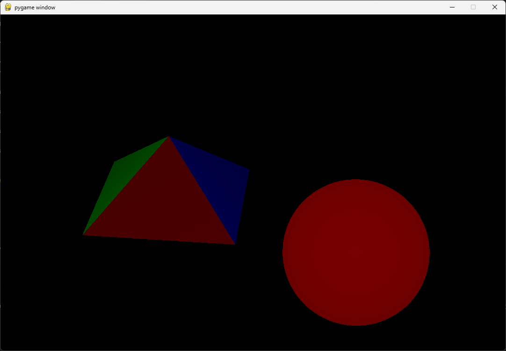

Ce projet personnel a été réalisé avec pour objectif d'afficher des solides 3D afin de gérer correctement la vision et la perspective dans l'espace en appliquant l'algorithme de raytracing (lancer de rayons).
Ce projet justifie ma capacité à comprendre et implémenter des algorithmes complexes et gourmands en ressources :
La puissance de calcul a été le principal obstacle de ce projet d'affichage 3D :
Difficulté : Le projet a d'abord été développé avec une implémentation strictement CPU de l'algorithme. Cela rendait les calculs de rendu extrêmement lents, et ce, même en divisant la charge de travail sur plusieurs threads du processeur.
Solution : Le passage par des shaders (exécution sur GPU) a permis d'améliorer de façon drastique la vitesse d'exécution de l'algorithme. Cela m'a permis d'afficher plusieurs dizaines de milliers de triangles simultanément en temps réel, compensant même le fait que mon implémentation initiale n'était pas la plus optimisée.